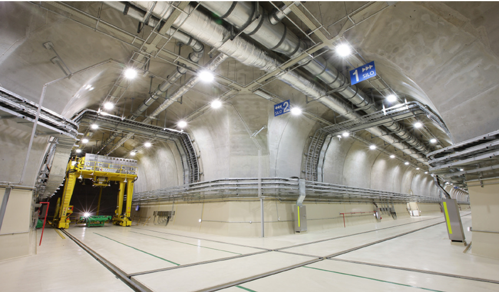
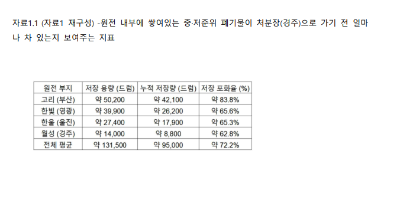
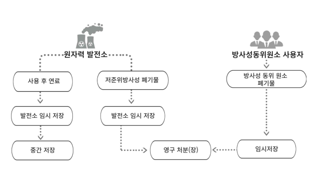
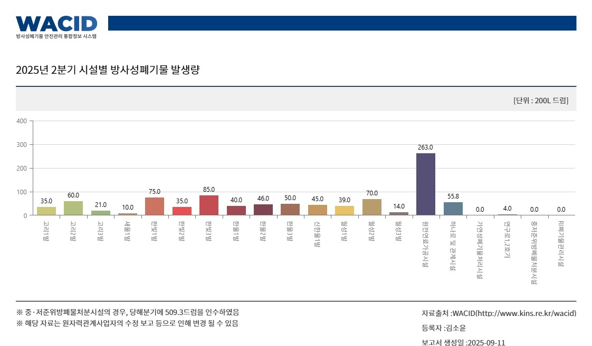
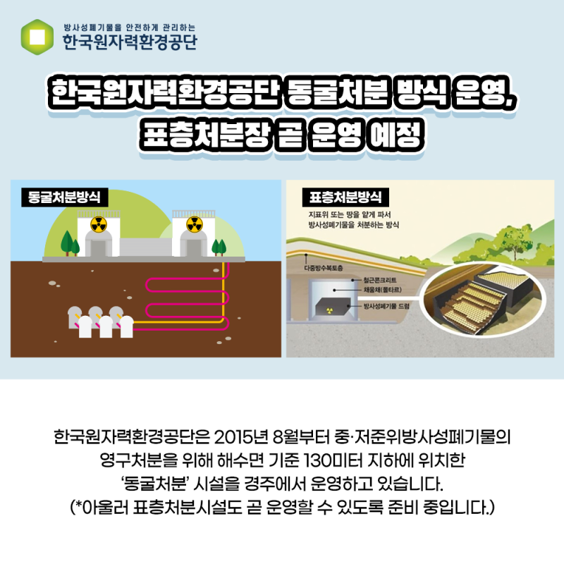
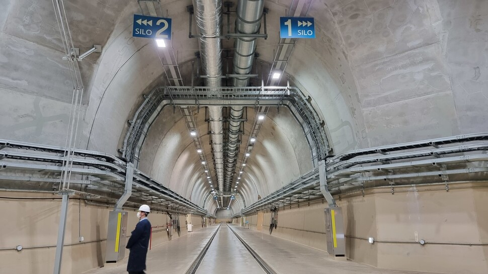
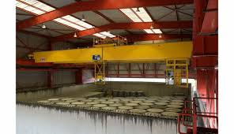
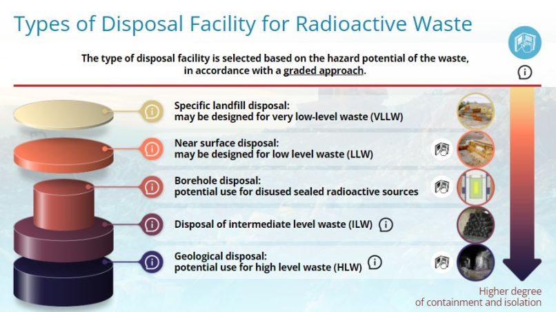
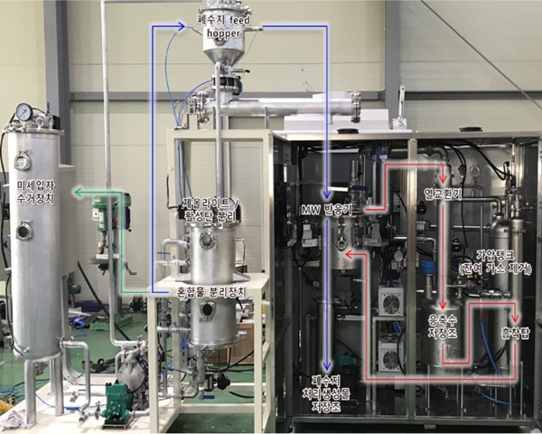
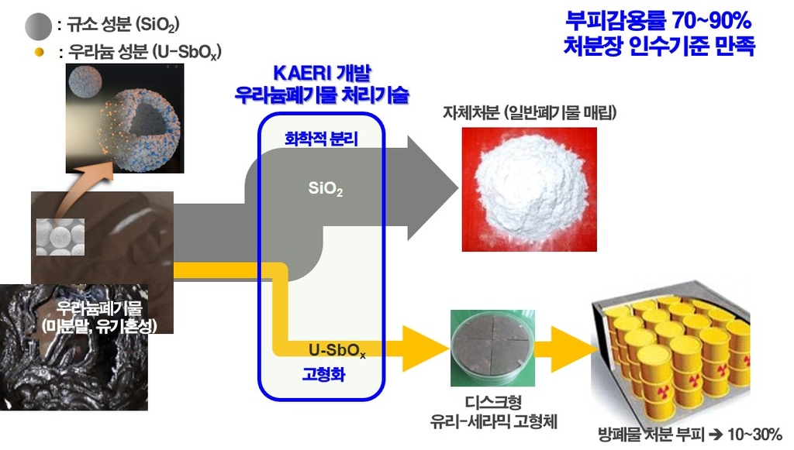

중·저준위
방사성폐기물
관리
발생 배경, 분류, 처분 방식, 처리기술, 환경 영향까지

세 파트로 나눈 자료조사와 발표 흐름
DOCX 지정 구성: 3~10 정은희, 11~16 최재웅, 17~24 이진우
- 원전 확대와 폐기물 증가
- 일반 폐기물과의 차이
- 발생원·발생량·관리 주체
- 천층처분과 심층처분
- 동굴처분과 표층처분 사례
- C-14 분리와 화학적 감용
- 경주 방폐장 현황
- 해외시설·입지·환경 영향
- 국제기준·국내 과제·수용성
원자력 발전 확대에 따른 방사성폐기물 증가 배경
탄소중립
저탄소 전원으로 원전 역할 재강조
계속운전
신규 원전과 기존 원전 계속운전 논의 확대
누적 폐기물
운영·정비·해체 과정에서 중·저준위 폐기물 증가

일반 폐기물과 다른 핵심은 방사선 위험성
방사능 존재
핵종 붕괴에 따라 알파·베타·감마선 방출 가능
지속성
반감기를 거쳐 감소하지만 안전 수준까지 장시간 필요
차폐
콘크리트·납·철 등으로 방사선 외부 방출 억제
관리 기준은 침출수보다
방사선 차폐와 핵종 유출 방지
중·저준위 폐기물은 별도관리가 더 안전하고 효율적
고준위
사용후핵연료처럼 고열·강방사선, 장기 심층격리 필요
중·저준위
작업복·교체 부품 등, 열 발생이 낮고 위험도 차등 관리 가능
최적화
위험도별 처분으로 비용·부지·안전성 균형 확보
모든 방폐물을 같은 방식으로 관리하면 과도한 비용과 부지 부담 발생
법적 분류는 처분 방식 선택으로 이어지는 기준
고준위
방사능과 열이 매우 높아 깊은 지하 격리 필요
중준위
비교적 높은 방사능 농도, 확실한 차폐 필요
저·극저준위
상대적으로 낮은 농도, 표층·매립형 처분과 연결
심층처분
동굴처분
표층처분
매립형 처분
발생원은 원전 중심이지만 의료·연구·산업까지 확장

비원전 분야
병원 RI, 연구소, 비파괴검사, 제품 멸균 등에서도 지속 발생
국내 발생량 현황은 그래프로 읽는 것이 핵심

연간 규모
원전 운영으로 매년 수천 드럼 단위 발생
해체 변수
노후 원전 해체 시 대형 폐기물 일시 증가 가능
그래프 해석
시설별 차이와 원전 외 발생원까지 함께 확인
KORAD 중심의 관리 주체와 국내 법적 근거
KORAD
운반, 저장, 처리, 영구 처분, 경주 처분시설 운영 전담
원자력안전법
안전 규제, 환경 방사능 감시, 배출·처분 기준 기반
방폐물 관리법
국가 기본계획, 관리기금, 처분사업 추진 근거
관리 체계는 기관, 법, 재원, 시설의 결합
방사성폐기물 관리는 발생부터 처분까지 이어지는 체계
원전·병원·연구소
핵종·농도·준위 확인
압축·소각·고형화
전용 용기·검사
동굴·표층·매립형
지하수·토양·공기
처분 방식 분류: 천층 처분과 심층 처분
천층 처분
지표 근처 또는 비교적 얕은 지하, 중·저준위 폐기물 중심
심층 처분
수백 m 깊은 안정 암반, 고준위·장수명 폐기물 중심

동굴 처분: 경주 방폐장 1단계 국내 사례

- 지하 암반 속 터널과 사일로에 폐기물 격리
- 폐기물 용기, 콘크리트 구조물, 자연 암반의 다중 방벽
- 최근 표층처분까지 더해 복합 처분 체계로 확장
표층 처분: 낮은 위험도 폐기물의 천층 처분 사례

지표 가까운 콘크리트 구조물
폐기물을 포장한 뒤 처분고 안에 배치
차수층과 덮개
빗물·지하수 접촉을 줄이고 외부 환경과 분리
적용 대상
작업복, 장갑, 필터, 교체 부품 등 저준위 중심
폐기물 위험도에 따라 처분 방식이 달라짐

낮은 위험도
매립형·표층·동굴 처분 등 천층 처분 중심
높은 위험도
심층처분처럼 더 긴 격리 기간과 높은 차폐 요구
최신 처리 기술 1: 마이크로파 기반 C-14 분리
C-14
폐수지에 포함될 수 있는 탄소-14는 처분 난이도를 높이는 핵종
마이크로파 가열
폐수지 내부에서 열을 발생시켜 C-14를 기체 형태로 분리
기술 의미
처분 전 방사능 농도와 관리 위험도를 낮추는 선택 분리 접근

최신 처리 기술 2: 화학적 분리로 부피 90% 감용

- 규소 성분과 우라늄 성분을 화학적으로 분리
- 규소 성분은 기준 충족 시 자체처분 가능
- 우라늄 성분은 유리-세라믹 고형체로 안정화
국내 경주 방폐장 현황: 동굴처분과 안전 점검
정기검사
구조·설비 성능, 방폐물 관리 상태, 안전조치 이행 확인
지하수 관리
배수계통과 기상관측설비 등 동굴처분 핵심 설비 점검
다중 방벽
자연 암반과 콘크리트 구조물로 생활권과 격리
해외 주요시설 비교: 지형과 정책에 따른 차이
미국 WIPP
뉴멕시코 지하 암염층 활용, 장기 안전성 평가와 환경 감시 중시
일본
콘크리트 기반 천층처분, 후쿠시마 이후 주민 소통과 수용성 중요
스페인 El Cabril
콘크리트 구조물과 다중 차폐층, 토양·지하수 지속 조사
공통점은 장기 격리와 환경 감시, 차이는 지질 조건
방폐장 입지는 기술 조건과 주민 수용성을 함께 판단
지질·암반 안정성
단층, 지진, 지반 안정성을 검토해 이동 가능성 저감
지하수 조건
방사성물질 이동 경로가 될 수 있어 흐름과 연결성 확인
환경·자연재해
생태 민감 지역, 홍수, 산사태 등 위험 요인 검토
부지 선정은 기술 검토만이 아니라 주민 신뢰와 동의 확보까지 포함
환경 영향은 토양·지하수·방사선 누출 가능성 관리
위험 경로
용기 손상 → 지하수 접촉 → 토양·수계 이동 가능성
다중 방벽
고형화체, 금속용기, 콘크리트, 암반이 연속 차폐
환경 감시
지하수, 토양, 해수, 공기, 주변 방사선 수치 장기 확인
국제 기준 준수는 안전성과 신뢰를 확보하는 조건
안전한 저장·처분
방사성물질을 통제 가능한 시설 안에서 장기 관리
다중 방벽
하나의 방벽 실패에도 추가 방벽이 유출을 억제
장기 모니터링
환경 보호와 주민 안전 확보를 지속적으로 입증
국제 기준은 규정 이행을 넘어
지속 가능한 원자력 운영의 조건
중·저준위 폐기물 처리·처분 전 과정 요약
작업복·장갑·필터·금속 폐기물
방사선 세기와 종류 확인
압축·소각·고형화·분리
전용 운반 용기 사용
동굴·표층·매립형
지하수·토양·방사선 감시
국내 과제: 중준위 처분 확대와 3단계 방폐장 구축
증가 압력
원전 계속운전과 해체로 폐기물 양 증가 가능
중준위 관리
저준위보다 높은 방사선 준위와 긴 관리 기간 요구
시설 확충
1단계 동굴처분 이후 2·3단계 처분시설 확장 필요
시설 확충만으로 부족하고
처분기술·환경감시·주민 신뢰가 함께 필요
기술 혁신과 사회적 수용성은 함께 가야 하는 과제
처리 기술
압축, 소각, 고형화, C-14 분리, 화학적 감용
처분 기술
처분용기, 콘크리트 구조물, 지하 암반의 다중 방벽
주민 동의
정보 공개, 안전성 검증, 장기 소통으로 신뢰 형성
최종 메시지: 기술적 안전성 + 시설 확보 + 주민 신뢰
질문과
답변
발생량, 처분 방식, 처리기술, 환경 영향, 국내 과제 중심
핵심 답변 프레임
위험도별 분류 → 처리기술 저감 → 처분시설 격리 → 환경 감시 → 주민 신뢰